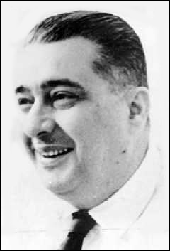

En ocasión de cumplirse los 50 años de la publicación de Paradiso, of José Lezama Lima, libro de crucial importancia en la configuración del boom de la novela latinoamericana, y de conmemorarse 40 años de la muerte del poeta cubano, el Instituto Cubano del Libro y la Asociación de Escritores de la UNEAC, con el coauspicio de la Casa Museo José Lezama Lima, el Aula José Lezama Lima del Centro P. Félix Varela, y la Casa de la Poesía de la Oficina del Historiador de la Ciudad, convocan al Coloquio internacional Pensamientos en La Habana. A Cincuenta años de Paradiso,of the 16 to the 18 de noviembre del 2016.
PRESIDENTES DEL COLOQUIO
Fina Garcia-Marruz y Roberto Fernández Retamar
PRESIDENCIA DE HONOR
Alicia Alonso / Abel Prieto / Miguel Barnet / César López /Antón Arrufat / Pablo Armando Fernández / Nancy Morejòn / Reynaldo Gonzalez / Pedro Simón / Ciro Bianchi
COMITÉ ORGANIZADOR
Dr. Luis Álvarez / Dr. Rogelio Rodríguez Coronel /Lic. Enrique Sainz, Zuleica Romay / Alex Pausides / Edel Morales, Vicepresidente ICL,Jesus David Curbelo, Director del Centro Cultural Dulce María Loynaz/ Israel Díaz Mantilla, Director Casa Museo José Lezama Lima,Yannelis Encinosa, Directora de la Casa de la Poesía, Victor Fowler, Alberto Marrero, Alberto war: Ejecutivo Asociación de Escritores
COORDINADORES GENERALES
DRA. Ivette sources / Dr. Emanuel Torné
PARTICIPANTES EXTRANJEROS
1-DRA. Yamilet García Zamora (Cuba-México)
2.-Maestra Julieta Leo (Mexico). Universidad de Monterrey.
3.- María José Buchanan Carillo –Estudiante (Mexico
4.- Mayela Deveze Villarreal –Estudiante:(Mexico).
5.- Pablo López Morales –Estudiante (Mexico).
6.- Nínive Vargas de la Peña (Mexico).
7.-Alfonso René Gutiérrez (Mexico).
8.- Matías Barchino (Univ. Castilla La Mancha, Spain. Decano)
9.- DRA. Luz Ángela Martínez (Chile).
10.- Gabriel Ximénez Emán Escritor (Venezuela)
11- Alfonso García (Writer, Leòn, Spain)
12- Dr. Fernando Ainsa y su esposa (Spain)
13-14 – Dr. Hans-Otto Dill y su esposa Gerta Stecher. (Germany)
15- Dr. Venko Kanev (France)
16- Laurence Breysse-Chanet (Francito).
17.- Ileana Bustillo (EUA, familia de Lezama)
18.-César Salgado (EUA)
19.- Dr. Emil Volek (EUA)
20.-Rubén Ríos Ávila Universidad Río de la Piedra, (Puerto Rico)
21- Jaime Rodríguez Matos (USA)
22- Omar Vargas (USA)
23- Juan Pablo Lupi (USA)
24- Ingrid Robyn, Ph.D. (USA)
25- Allison E. White (USA)
26- Enrique Rodríguez (Colombia)
27- Diógenes Fajardo Universidad de Bogotá, (Colombia)
28- Sergio Ugalde UNAM (Mexico)
29- Marcos Rivadeneira (Ecuador)
PARTICIPANTES CUBANOS (25)
Conferencistas y ponentes
Luis Alvarez (Camagüey)
Olga Fernández (Camagüey)
Rogelio Rodríguez Coronel
Reynaldo Gonzalez
Maggi Mateo
Enrique Sainz
Abel Prieto
César López
Roberto Méndez
José Antonio Michelena
Ileana Alvarez (Ciego de Ávila
Roberto Manzano
Other guests
Virgilio López Lemus
Jesús Bayo
Doribal Enriquez
Israel Díaz Mantilla: Director de la casa museo José Lezama Lima
Yanelys Encinosa: Directora de la Casa de la Poesía
Josefina de Diego
Adamelia Feijoo
Aitana Alberti
Victor Fowler: Ejecutivo Nacional de la Asociación de Escritores
Alberto Marrero: Presidente de la sección de Poesía
Alberto war: Presidente de la sección de Narrativa